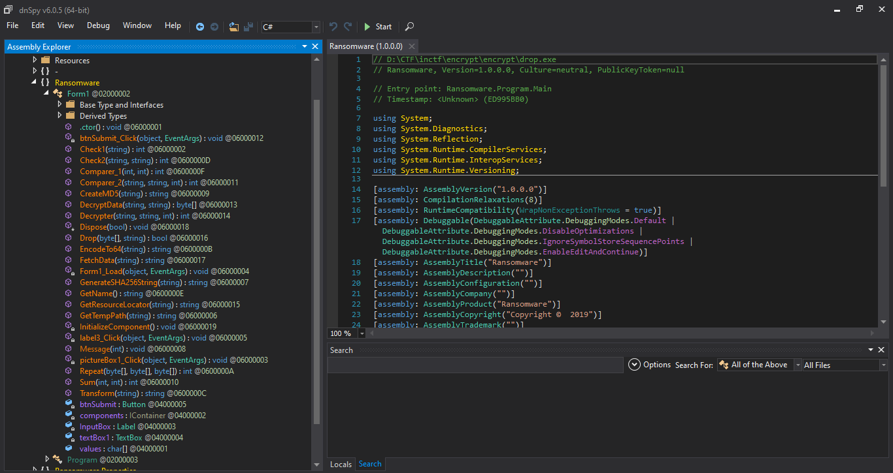
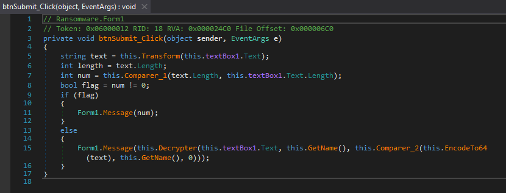
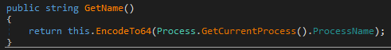
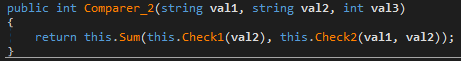
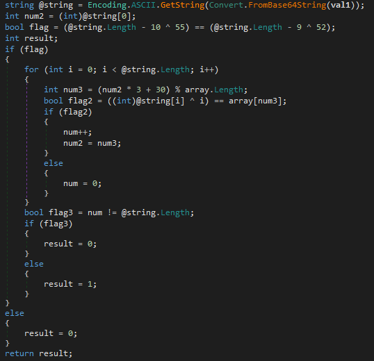
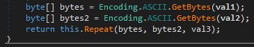
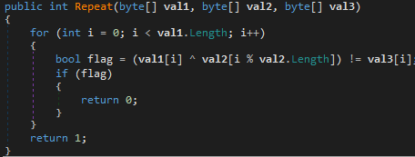
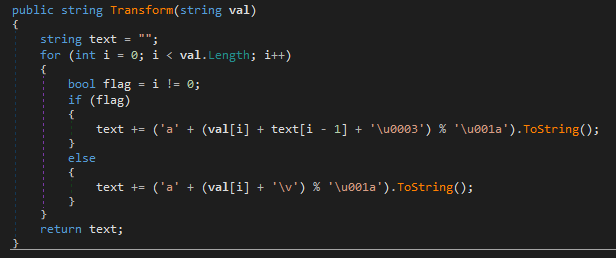

InCTF 2019 Bài viết¶
Reverse Engineering: Encrypt
When running drop.exe, I saw a form with an input.
This is a challenge written in C#. Let's decompile it with dnSpy

Well, a bunch of functions. I will start from the btnSubmit_Click.

This function takes the input as this.textBox1.Text, then a string called text is generated from input by Transform function. Then lengths of 2 strings are checked in Comparer_1 function and the return value should be 0. We also need the Decrypter, GetName and Comparer_2.
In this challenge, I will find out the input by checking GetName and Comparer_2 first.

This function get the process name and convert it by base64

This function returns sum of 2 check, the Sum function simply returns sum of 2 integers. Now we look back the Comparer_2, the first argument is the text converted to base64, and the second one is the process name. Therefore, Check1 checks the process name, and Check2 checks text and process name respectively.
Let's have a look at Check1

An array called array is used to check our input (val1). num2 gets the ascii number of first character of the input (after being converted to normal characters), and the first step in the loop checks if @string[0] ^ 0 == array[num3]. So I write a little python code to check posible first character.
for first in range(32, 128):
num2 = first
num3 = (num2 * 3 + 30) % len(array)
if first ^ 0 == array[num3]:
print(chr(first))
The result is only t. Great! I only need to undo the code.
num2 = ord('t')
process = ""
for i in range(100):
num3 = (num2 * 3 + 30) % len(array)
process += chr(array[num3] ^ i)
num2 = num3
print(process)
However, only 15 first characters are printable. But 15 is satisfied the condition of length of input. So our process name is tHinK_M4lici0us. Now we look at Check2 and Repeat.


Hmm, remember that we have to convert process name to base64 first. And look at Repeat, I also undo this code.
from base64 import b64encode, b64decode
val2 = b64encode(b"tHinK_M4lici0us")
val1 = ""
for i in range(len(val3)):
val1 += chr(val2[i % len(val2)] ^ val3[i])
print(b64decode(val1))
And the text is ahxsylrmxgmjlylipckxdiqwrjwwrxbtfliyvvsuh.
Now we need to recover input from text.

I was totally stucked in here, and then I got the hint from author about the character set but I forgot it. This below code is the idea to duyệt vét cạn.
text = "ahxsylrmxgmjlylipckxdiqwrjwwrxbtfliyvvsuh"
ans = ['C', 'Y', 'b', '3', 'r', '_', '@', '_', '$', '#', '@', 'r', '3', 'd', '_', 'R']
def keygen(i):
if i > 40:
return
for j in range(32, 128):
if ord(text[i]) == ord('a') + (j + ord(text[i-1]) + 3) % 26:
ans.append(chr(j))
if len(ans) == len(text):
print(''.join(ans))
else:
keygen(i+1)
ans.pop()
keygen(16)
And there we are, input is CYb3r_:math:`3CuriTy_is_@_`#@r3d_R3:math:`p0^`ibiliTy. Of course, when you put this to input box, it reponses Wrong input because the Message function do it.
Now look at Decrypter, it's quite simple. First, it creates a MD5 hash from input + process_name (in base64) ans stores it in text. You should try to figure out what next functions do . Finally, the Drop function creates a file with filename encrypterXX.exe in temporary directory of your computer (this path can be gotten from GetTempPath function). XX are 2 random characters. That is the encrypting file!!! It's time to find out how the data encrypted and exported to Image.png.
When I decompile encrypterXX.exe, it encrypts by using Microsoft system. The only thing we need to do is to change this code a little bit, replace CryptEncrypt to CryptDecrypt Now is your turn to try to code decrypting file, and the key is encrypterXX.exe0. Decrypt the file 2 times and you will get the flag.
Thanks for reading!